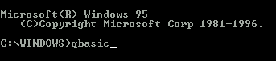
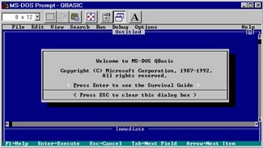
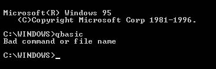
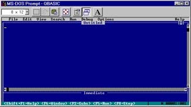
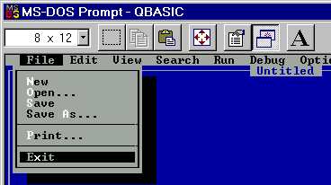
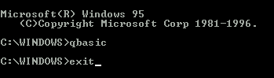
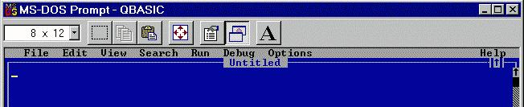
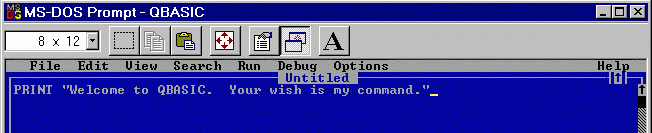

Copyright (C) 2008-2010 Ted Felix.
Permission is granted to copy, distribute and/or modify this document under the terms of the GNU Free Documentation License, Version 1.3 or any later version published by the Free Software Foundation; with no Invariant Sections, no Front-Cover Texts, and no Back-Cover Texts. To see a copy of this license, go to http://www.gnu.org/copyleft/fdl.html.
Translations
Serbo-Croatian: http://science.webhostinggeeks.com/tedfelix-qbasic by Jovana Milutinovich
Polski (Polish): http://deger.republika.pl/TedFelix/QBforKids.htm by Damian
You've probably used computers to play games, and to write reports for school. It's a lot more fun to create your own games to play on the computer. This book will help you get started by using QBASIC. QBASIC is a programming language. With a programming language you can tell the computer what you want it to do. It's a lot like giving someone directions to your house. The computer follows each step and does exactly what you tell it. By programming the computer you can solve math problems, create art or music, and even make new games. It's all up to you.
The best way to start with this book is to type in some of the small programs you'll find in each of the chapters. You might need to work through Chapter 1 first. An adult can help you get up to speed quickly. Then change the programs to do what you want them to do. Before long, you'll be writing your own programs.
Kids love computers. They also like to create, and to have some control over the world around them. The computer will do whatever it is told. It may not seem that way at times, but it is true.
When I was a kid, all we had was the "old BASIC". It had line numbers and didn't teach good structured programming habits. QBASIC is a much better learning tool. With the information acquired from this book, one can move on to a more advanced QBASIC book (if you can find one). After becoming proficient in QBASIC, one can move on to more powerful languages like Visual Basic, Java, C and C++. I would suggest a course of study like this:
Obviously, you'll have to determine when your child is ready to move from one language to another. My rule is that QBASIC should be introduced at a point where children can learn on their own from this book (10 or 11 years old). Then let them go and master it by themselves. This gives them a huge feeling of accomplishment. As you see them reaching the limits of what can be done, introduce them to other languages. The jump from QBASIC to Visual BASIC should be made when it is obvious that your child's programs could benefit from a Graphical User Interface (GUI). It's up to you to determine when they are ready.
If you are an elementary school teacher interested in teaching programming or software development (aka software engineering) to kids, I'd suggest starting with Logo at the third or fourth grade level (8 or 9 years old). Then move to QBASIC for fourth, fifth, sixth, etc... (10 years old and up). Having to teach a large number of students always presents a challenge as they will each have different abilities. Computer programming fits in perfectly with a math curriculum since it helps the students become more aware of numbers and how they "work". Because of learning to program in BASIC, I understood trigonometry by seventh grade. I had to, because the kinds of programs I was writing required that I understand trig, and apply it. What could be a better motivation for learning? Beyond sixth grade, I suspect one could introduce Visual BASIC, and continue on up through Java/C# and into C/C++ at the High School level. If anyone has any experience teaching programming at the elementary or middle school level, let me know what works for you, and I'll add it here.
At age 11, I learned from a book very similar in style to this one. It was the TRS-80 User's Manual and it came with my first Personal Computer, the Radio Shack TRS-80. I haven't stopped programming since then. I hope this book has the same effect on your kids (or maybe even you). Please email me with any comments or suggestions to improve this book. My email address:
You can find more information on my Computer Science for Kids page:
http://tedfelix.com/cs4kids - Computer Science for Kids
And in case you are looking at a mirror site, the latest version of this book is always kept here:
http://tedfelix.com/qbasic - QBASIC Programming for Kids
And for all you aspiring programmers in Poland, check out Damian's Polish translation at http://deger.republika.pl/TedFelix/QBforKids.htm
I hope you and your kids have lots of fun.
To run QBASIC we need to get to DOS.
If you are using Windows 3.1, you'll need to find the
"Main" program group and look for an icon called "MS-DOS
Prompt". Double-click on it to get the
"C:\WINDOWS>" prompt
in a black window with white text.
In Windows 95, click on "Start", then "Programs", then
"MS-DOS Prompt". In Windows 98, try the Windows 95 steps above, then
try the Windows ME steps below. It is the same as one of
those, but I don't have a Windows 98 machine handy to test. In Windows ME, click on "Start", then "Programs", then
"Accessories", then "MS-DOS Prompt". In Windows NT 4, I believe it was called the "Command Prompt".
Try the steps described for Windows 2000 below. In Windows 2000, it is called the "Command Prompt" and you
can find it by clicking on Start, then Programs, then Accessories,
then Command Prompt. In Windows XP, it is called the "Command Prompt" and you can
get to it by clicking on Start, then All Programs, then Accessories,
then Command Prompt. You will get the black window with
the " Now you're ready for the next step.
QBASIC may not be on your computer. Don't be alarmed,
Appendix A shows you how to get it there. At the
" If you get a blue screen with
something about a "Survival Guide", you made it! If instead you got something about a "Bad command or file name", you need to check out Appendix A to get QBASIC
installed on
your machine. Don't worry, we'll wait right here for you.
We won't be using the survival guide right now, so press
the <Esc> (escape) key to get the big blank blue screen.
Now we're ready to program.
If you need to leave QBASIC, you can click on "File" on
QBASIC's menu and
then "Exit" to get back to DOS. At the " I'm assuming you will be following along with
QBASIC in front of you. This won't be much fun
if you aren't. So power up the computer and get
QBASIC's blue screen up in front of you. Go
ahead and press the
<Esc> key to "clear this dialog box" when
it asks you.
Before we start, let's take a look at QBASIC's screen.
At the top is QBASIC's menu. The menu has the following
items: File, Edit, View, Search, Run, Debug, Options, and Help.
Clicking on any of these with the mouse will show more
selections.
Just under the menu is the word "Untitled". This means
we haven't given the current program a name. This will change
when we learn to save programs. The big blue area with the
blinking cursor ( These are the most important areas to know for right now.
We will learn more about the rest of QBASIC's screen as we
go along.
If you've used your computer to do school work or write a report,
you'll notice that most of the editing
keys (<Backspace>, <Delete>, <Insert>...) work
just the way they
always do. In case you haven't used these
keys before, here's a list:
That's great, but what does it do? You have to run
it to find out. Look for the word "Run" on QBASIC's
menu at the top of the screen. Click on it. Now
you will see a menu with a list of selections (Start,
Restart, and Continue). Click on Start to run your
program. You may have to look around on the screen
a bit, but you should find your message:
PRINT prints things to the screen. Don't forget to
put what you want to say in double-quotation marks (").
At the bottom of the screen you will see a message
"Press any key to continue". Press <Enter> to
get back to QBASIC. This is QBASIC's way of
giving you enough time to see what your program
did.
As a cool shortcut, use ? for PRINT. Try it. Press
<Enter> to start typing on a new line. Now type this:
Isn't that nice? The ? becomes the word PRINT. That
should save us a lot of typing in the long run.
You can try running the program again (remember?
Click on Run, then Start on the menu). You should see
something like this:
It was probably a bit hard to find your messages
on the screen with that last program. Wouldn't
it be nice to be able to clear all that stuff off
the screen? "CLS", which stands for CLear Screen,
is just the ticket. You will need to put CLS
at the very top of your program to clear the screen
before you print anything.
To make CLS the first line of your program, follow
these steps:
Now your program should look like this:
Run it. Remember, click on Run and then Start in
QBASIC's menu. You can also run the program by
pressing the <Shift> key and holding it down while
pressing <F5> (that's what Shift+F5 means on the
menu). Another handy shortcut.
That's much better. Only your message is on the
screen, which is the way it should be.
Let's start a new program. To get rid of the
old program, click on "File" on QBASIC's menu and
you will see the File menu with New, Open..., Save,
and others. Click on "New". QBASIC will now tell
you that your current program is not saved, and
it will ask if you want to "Save it now?". Let's
not save it. You can always type it in again.
Click on < No > with the mouse. We'll learn how to save
programs in Chapter 8.
Now you should have a clean blue screen. Type in
this program:
Make sure you get the semi-colon (;) at the end of
the PRINT line, and the space between the word
"here" and the last quotation mark. You don't need
to use my name, put yours in there instead ("Jack
was here ", or whatever). Now run it.
DO and LOOP will do whatever is between the
DO and the LOOP over and over again.
Ok, that's great. HOW DO I
STOP IT!? Press the <Ctrl>
(Control) key and hold it down while pressing the
<Pause> key. The <Pause> key is usually at the top
of the keyboard and all the way over to the right.
This is called "pressing the <Break> key." Don't
worry, it doesn't really break your program, it
just stops it and takes you back to QBASIC. Maybe
it should have been called the "brake" key. On laptop keyboards, the break key might be
a little harder to figure out. Sometimes you have to press the
"Fn" key followed by the key that says break. Sometimes
it is color-coded to help you figure it out. You'll
know you have it when the program stops and the editor
comes back up. Notice that PRINT has two spaces in front
of it. This is called "indenting" and it makes the program
easier to read. You can see
the beginning and the end of the DO...LOOP more clearly.
QBASIC doesn't care about indenting, only people do. It's
important to make your programs look nice so other people
can read them.
So far our programs have only talked to us. Let's
write one that will listen. Get rid of the previous
program by clicking on File, then New on QBASIC's
menu. Click on < No > when it asks if you want to
save the old program now. Try this:
Don't forget the comma (,) between "Enter your
name: " and Name$. Run it. When it asks, type your
name, then press the <Enter> key.
"Name$" is called a "variable". To be variable
means that things can change. Try running the
program again, but this time type in a friend's
name (don't forget the <Enter> key). Sure enough,
the message changes.
INPUT Name$ takes what you type at the keyboard
and puts it into the Name$ variable. PRINT Name$
prints out what is in the Name$ variable.
Variables hold letters and numbers. The dollar
sign ($) means this variable can hold letters.
These are called "string variables".
Variables without a dollar sign can only hold
numbers. We'll be seeing them soon. You can call your variables anything you want.
Try going back through this program and changing
every "Name$" to "Fred$". What happens when you
run it?
Another way to think of a variable is to imagine
a small bucket with a name on it. Put
"Name$" on it. This is the bucket's (variable's) name.
Now take a piece of paper
and write your name on it and drop it into the
imaginary bucket. Now the variable Name$ has your
name in it. Computer variables can only hold
one piece of paper (one value) at a time. When you want to PRINT what's in a variable, leave
off the double-quotation marks ("). This program will
show you how this works: The first PRINT statement prints Name$ on the screen.
The second PRINT statement prints whatever name you
entered. Let's make that last program a little smarter.
I want to be able to identify intruders playing
with my programs. Wouldn't it be great if the
computer could recognize someone's name and
print a special message for them? How about
this: You can change the Name$="Mike" to Name$="Joe",
or whoever you want to go away (like a brother or
sister). Run the program
and type in your name (hopefully it isn't Mike).
You should see the same old message as before.
Now run it again and try entering "Mike" (or "Joe"
or whatever you changed it to).
If it didn't tell the right person to go away,
make sure you typed the name correctly.
In QBASIC,
"Mike" is not the same as "mike", so if you don't
type the first letter in upper-case, the program
won't work. Make sure you enter the name
exactly the way you put it in the program.
The "IF..THEN..ELSE..END IF" statement in this program
checks to see if Name$ has "Mike" in it. If
so, then it does the PRINT statement after the
"THEN". If Name$ isn't "Mike", it does the PRINT
statement after the "ELSE". "END IF" tells QBASIC that
the "IF" is over.
The Name$="Mike" portion of the IF...THEN is
called the "condition". With numbers you can
also check for "greater than" and "less than": If you want to check for "greater than", use "Number > 100".
Equals works just like before, "Number = 100". Another option is
"not equal" which can be done like this: "Number <> 100". IF...THEN is one of the most powerful features of QBASIC.
Using IF...THEN can make your programs very interesting.
It lets your program make decisions and do something
appropriate. Computers are very good at math. Let's
get the computer to do some math for us. Here's
a simple multiplication calculator: If you have trouble finding the star (or asterisk "*") on the
keyboard, it is usually above the number 8. Run it, and enter
two numbers. It does an excellent job multiplying for you. A and B are variables, just like Name$. Unlike
Name$, A and B do not have a dollar-sign after their
names. This is because they are only holding
numbers, not letters.
"A * B" means "A times B".
QBASIC doesn't use "X" for multiplication because you
might want to have a variable called "X".
Try changing the "A * B" to "A - B" for subtraction.
"A + B" will do addition, and "A / B" will do
division. Why "/" for division? Because there's
no division sign key on the keyboard. At least I
haven't found one.
"A * B", "A + B", "A - B", and "A / B" are called mathematical
expressions, or simply "expressions".
Before we get into some fairly big programs, let's look at
how to save our masterpieces.
The first thing we need to think about is where we are going
to save our programs. The two main places we can save things are
the hard disk, and onto a floppy disk. Let's look at both places.
Using a floppy is a good idea if you don't want other people
looking at your programs. The floppy can be removed from the
computer and kept in a safe place. Floppies are also good when
you want to move programs from one computer to another.
Let's try it. Find a blank floppy and place it into the
computer's floppy drive. The floppy can have stuff on it, as long as
there is some free space left. You'll need to have a program up on
the screen for this to work properly. Go back to the previous chapter
and type in the example if you need to get something up on the screen.
Click on "File" on QBASIC's menu, then "Save".
The "Save" dialog will appear on the screen. Notice that the
cursor is in a box (field) called "File Name:". Type this:
Be careful with that backslash "\". It isn't the same as the
front-slash "/" which is on the same key as the question mark "?".
QBASIC is very picky about this.
Press the <Enter> key. What happened? Did you hear
something? Where'd the "Save" dialog go? Hmmmm, ok, hopefully
that worked. How can we check? Let's try loading the program back
into QBASIC. Wait, it's already there. Ok, then let's clear it out
and try to get it back from the floppy. Remember how to get rid
of a program? Hint: "File" then "New" on the menu.
Let's do it. Click on "File" then "Open..." on QBASIC's menu.
Now you will see the "Open" dialog. Type this: and press the <Enter> key. Now you should see "TESTSAVE.BAS"
in the box called "Files". Two clicks oughta do it. Double-click on
"TESTSAVE.BAS" and the program is back from the floppy.
The hard disk is the most convenient place to save programs.
Since it is always in the computer, your programs are always there
for you to load when you need them.
Hard Disks usually have a lot more information on them than a floppy.
Because of this, you need to be concerned about keeping things neat.
You'll never be able to find what you need otherwise. The best way
to organize your collection of programs is to put them into a
"subdirectory" or "folder" on the hard disk.
Let's make a folder on the hard disk for our programs.
In Windows 95 we will need to use Windows Explorer. In Windows 3.1
we will use File Manager. First, the Windows 95 way.
Click on the "Start" button, then "Programs", then "Windows Explorer".
Now click on "File", then "New >", then "Folder" on the Windows
Explorer menu.
Notice the words "New Folder" on the right-hand side of Windows
Explorer.
Go ahead and type in a name for the new folder, but keep it short!
QBASIC is an older program that can't handle names bigger than 8
letters or numbers. I called mine "TedsPrgs" meaning Ted's Programs.
Call yours whatever you want, but no more than 8 characters, or it will
look real funny to QBASIC.
Press the <Enter> key to create the folder. Good, that's done.
We won't need to do that again, unless you'd like to make another
directory at a later date. Go ahead and close Windows Explorer and
get back to QBASIC.
...
Saving to the hard disk is only a little different from saving to
a floppy. You'll need to have a program up on
the screen to save. Go back to the previous chapter
and type in the example if you need to get something up on the screen.
Click on "File" on QBASIC's menu, then "Save".
The "Save" dialog will appear on the screen. The
cursor is in a box (field) called "File Name:". Type this: Once again, watch the backslash "\". Change "TedsPrgs" to whatever
you named your directory.
Press the <Enter> key. Now you will see a list of
programs in that directory. Since you haven't saved anything yet, there
shouldn't be any programs there. Go ahead and type this:
and press the <Enter> key. Hmmm, no sound at all that time.
Hard disks are much more quiet than floppies. So, let's make sure it
worked properly. First, get rid of what's on the screen with a "File"
then a "New".
This is also very similar to the way we loaded a program from floppy.
Click on "File" then "Open..." on QBASIC's menu. This will bring up the
"Open" dialog. Type this:
Like before, watch the backslash "\" and change "TedsPrgs" to
whatever your folder was called.
Now you should see "TESTSAVE.BAS" in the "Files" box. Double-click
on "TESTSAVE.BAS" to load it.
That wasn't too bad, was it? Once you figure out whether you
want to save to floppy or hard disk, you only need to remember one
way to save and load.
IF...THEN...ELSE is fine if you only have two things you
want to check. What if you have 5 or 6 friends that might use
your computer and you want the computer to say something different
to each of them? Try this: Whew, that was a big one. Fortunately we learned how to save in
Chapter 8. Save it if you want before running it. Feel free to
change "Ted" and "Mike" to "Laura" and "Robin" or whoever.
SELECT CASE first checks Name$ for the value "Ted". If it finds
it, it does the PRINT after the CASE "Ted". When the PRINT is done,
it skips over the rest of the CASEs. It keeps checking against
each CASE until it gets to CASE ELSE. If it hasn't found anything,
it will do whatever is after the CASE ELSE.
SELECT CASE can also be used with numbers as well as strings.
Here's a quick example: So far, we've only let the user fill in our variables.
We can fill in variables on our own inside our programs too.
Like this: "A = 1" places the value 1 in the variable A. "B = 2"
places the value 2 in the variable B. A$ = "Hello" places
the string "Hello" in the variable A$. You get the picture.
Then the program prints them out to prove to you that they
are there. See if you can figure out what this rather clever
program will do. Then type it in and run it to see if you
were right. Did you get it right? Did the output go by
way too fast? You'll have to press Break to stop
it. Then take a closer look and see if you can see
what's going on. That program is what is called a "counter". It
counts 1, 2, 3, 4... until it is stopped. Random numbers are numbers that you can't predict.
Flipping a coin or rolling dice will give you a random
number. Random numbers are very important in games
and in some kinds of Math. Computers can generate
random numbers pretty well. QBASIC's RND function provides
random numbers that we can use. RND is a special function that gives us a random number
between 0 and 1. We can use this in games to make things
interesting. RND is perfect for rolling dice or flipping
a coin. First let's see RND in action: This program will print RND twice. Notice that
you'll get two numbers that appear to be unpredictable
and random. But, try running the program again.
You'll get the same "random" numbers. This means your
games would always be the same each time the user
runs them. Fortunately, there's a way to fix this. Using RANDOMIZE TIMER will make sure the random numbers
you get are different each time you run. Try this: Random numbers between 0 and 1 aren't really very useful.
What you will need for a game might be a random number
between 1 and 6, like when you roll dice. To get something
more useful, we'll use math. Fortunately, computers are
very good at math. There are two problems we must solve to get the results
we want. First, the range of random numbers has to be
expanded from 0 through 1 to 1 through 6. That's easily
done like this: By multiplying by 6, we increase the range to 0 through 5.
By adding 1 we shift the range up to 1 through 6. However,
there's still a problem. All that decimal stuff. QBASIC's
INT function can be used to convert a decimal number to
an integer (a number without a decimal). Here's a program that rolls two dice and prints
the value of each. The variables Die1 and Die2 are
used to hold the values of each die before printing.
In a real game, Die1 and Die2 would be used in some
clever way to change the outcome of the game. Note that in the last program there was a PRINT on
a line by itself. Did you see what it did? It simply
printed a blank line on the screen. This can be useful
for making the output from your program look nicer. Here's a fun program that uses most of what we've
learned so far to make a "Magic 8 Ball". As always, go ahead and customize it. Change "No way!" to
"You bet!" to get a Fortune Teller that never says "No".
Go ahead and try adding a new fortune. You'll need to change to since there will be 6 fortunes now. Then you will need to add
a " Back in Chapter 4 we saw a DO...LOOP that went forever. There
are a number of ways to make a loop stop. One way is to use
WHILE. This next program uses WHILE to make sure the program
will only go as long as Answer$ has the letter "y" in it. The condition on the LOOP WHILE line is the same as
a condition we might use in an IF...THEN. In this case, we
check to see if Answer$="y", and if it does, we continue
looping. If it doesn't, we fall out of the loop and our
program ends. You can add this feature to any program. Try adding it
to the fortune teller. That last program works great, as long as the user always
types in a lowercase "y". What happens if the user types
in "yes"? Since "yes" is not the same as "y" to the computer,
the test for Answer$="y" will fail, and the program will
end. Probably not a good idea. We have the same problem
if our user enters a capital "Y". Try a few of these to
see what I mean. There are several ways to make this program smarter and
easier to use for our users.
We could have it check for a few different ways of saying
yes by using "OR", like this: This version will allow the user to enter "y" or
"Y" and the program will run again. We can get even
more clever by using LEFT$ like this: This version will let the user enter "Yes", "yes", or just
about anything that starts with a "y" because LEFT$ is
used to only look at the first character in their answer.
You could even enter "yep" or "YEAH!" and the program
will begin again. This may seem to make the computer
smarter, but we know what's really going on. To prove
the computer really isn't very smart, try entering "sure"
or "yellow". It thinks "sure" is "no", and "yellow" is
"yes". LEFT$ can be used to take a certain number of
letters from the left side of a string variable.
As an example, if we have: Then LEFT$(A$,2) will give us "TE". LEFT$(A$,3)
will give us "TES". The first "parameter" you pass
to LEFT$ is the string you want to work with.
The second parameter you pass to LEFT$ is the
number of characters (letters) you want. Let's
try a program that uses LEFT$ in a different way: This program will print the first character of whatever
you enter, followed by the first two characters, followed
by the first three characters: QBASIC also provides a RIGHT$() in case you were
curious, and it works just like LEFT$(). Try this: Here's an example of what that program will do: Tired of all this black and white? Then the
COLOR statement is for you. Try this program for size: Color takes two numbers. The first number is the
foreground color. The second number is the background
color. For example, if you want to print black on white
instead of white on black, use "COLOR 0,7". The colors
each have their own number: There are plenty of other colors too. Try the numbers
from 8 through 15 to see what colors you get. Basically,
if you add 8 to any of the above colors, you get brighter
versions of the same color. Take blue which is 1 and add
8 and you get 9 which is bright blue. Adding 16 to a color number gives you a blinking version.
This doesn't work in a DOS window, though. Press
<ALT><ENTER> to switch to full-screen mode which will
show the blinking. Try this program: Color can be used in many ways to make your programs more
interesting. FOR...NEXT is a loop like DO...LOOP, but a FOR...NEXT
loop has its own counter built in. Try this: Much better than our last counter. This one stops on
its own after counting to 10. Here's a color chart program using a FOR...NEXT loop. FOR...NEXT can also do "step counting". Try this: That will count by 2's from 2 to 20. STEP tells
QBASIC what to count by. Try changing it to count by
10's from 10 to 100. FOR...NEXT can also count backwards if you use a
negative STEP value: "SLEEP 1" tells QBASIC to wait for
one second, then continue. If you just need a beep in your program, you can
use BEEP: SOUND lets you play a beep and tell it how
high or low the beep will be, and how long it will last.
This program makes a 1000Hz beep for about 1 second: SOUND is good for making sound effects. Here's
a bomb dropping: If you want to play a song, PLAY is exactly
what you need. Try this: PLAY is like a little programming language inside of QBASIC.
"e8" means play an eighth note "e". If you are familiar
with sheet music, this will make sense. Here's a scale: The ">" greater than sign means "go up one octave". There
are many more special commands in PLAY. Check the QBASIC help
for a list of all of them. Here's a familiar tune that uses a trick to
do triplets. Since PLAY doesn't do triplets, you have to modify the
tempo to get the right rhythm. PLAY begins with a default
tempo of "T120" which means 120 quarter notes per minute.
In the above song, we switch to T180 which is the triplet
tempo for T120. By multiplying our tempo by 1.5, we get the
triplet tempo. When the triplets are done, we switch back
to the regular tempo. You can see in the above example that
we switch back and forth between the main tempo (T120) and
the triplet tempo (T180) several times as needed. As with everything, there's more than one way to do
triplets. 8th note triplets can also be called 12th notes,
like this: Using this technique, 16th note triplets are 24th notes,
etc.... You just multiply the note value by 1.5 instead of
changing the tempo. Each of these techniques has its advantages and disadvantages.
The tempo-changing technique uses more space, but the
notes retain their values. The 12th note technique is more
compact, but not as easy to understand. Which one you use
is up to you. Just make sure the next person to read your
code understands what you are doing. Comments are a good idea. LOCATE allows you to print in a specific place on
the screen. The two numbers after LOCATE are the coordinates
where the print will be. Just like coordinates in
math class, these numbers give the row and the
column. The first number in LOCATE is the row, or
how far down the screen the print will start. The
second number is the column, or how far over the
print will start. Let's use some random numbers, COLOR and LOCATE
to make a more interesting version of our first looping
program: Kind of messy, but interesting. How about a clock? TIME$ is a special variable that contains the
current time. Press Break to stop. Use WIDTH 40 for big text. It changes the entire screen
to wide text mode. Use WIDTH 80 to go back to normal size text. Unfortunately, you won't see the big text in a window. You'll
have to press <Alt>-<Enter> to switch to full-screen
mode. Be sure to press <Alt>-<Enter> again to switch back
to window mode. There are many special symbols and other characters
you can display that aren't on the keyboard. Try this: That prints a couple of smiley faces. There are plenty
of other characters too. This program will show you many,
but not all of them: So far, we've only been dealing with text (words and numbers).
How do we do pictures in QBASIC? First, we need to
use SCREEN to change from text mode to graphics mode. SCREEN lets you select a "graphics" screen instead of the
"text" screen we've been using. This will let you draw
pictures. In the next program, we'll use DRAW to draw a
square on the screen in SCREEN 12 graphics mode. There are many other SCREEN numbers you can use, but 12
is probably the easiest to work with. It gives you a lot of
space and the color numbers are familiar. QBASIC Help explains
all the possible values of SCREEN. You can always try them
and see what happens. DRAW is kind of like the turtle in the programming language Logo. With
DRAW, you can move around the screen and draw lines along the
way. In the above example we used the following DRAW commands: DRAW can do a lot more than that. It is like PLAY. It's
a small programming language inside of QBASIC.
Look at QBASIC Help for
a complete description of everything it can do. Here's a
filled in box: "C15" sets the color to bright white. "BF1" moves into the square,
then "P15,15" fills it with
bright white. Finally, here's something very Logo-like: "TA" means to turn to a specific angle. STR$ converts the
value in I
to a string. This lets DRAW turn to the angle in the
variable I. It's not quite as easy as Logo, but it's still pretty
impressive. QBASIC also lets you draw using a coordinate system. It's
like drawing graphs on graph paper. Try this: LINE lets you draw a line between two points. The points
are specified in (x, y) coordinates. You may have seen this
when learning about graphs in math class. In QBASIC, the
coordinates are almost the same. The only thing that is
different is the Y coordinate. In QBASIC, the Y coordinate
is upside down. "0" is at the top, and bigger numbers go
toward the bottom of the screen. "LINE (0, 0)-(320, 240), 15" draws a line starting at
coordinate
(0, 0) which is the upper left corner of the screen. The line
ends at (320, 240) which is the center of the screen. The
last number is the color (15 which is bright white). By adding a "B" to the end of a LINE statement, you can
draw a box. Try this: The first coordinate is the upper left corner while the
second coordinate is the lower right. Try "BF" instead of "B". Interesting? QBASIC can also draw circles using the CIRCLE statement: The coordinate (320, 240) tells the computer where to
put the center of the circle. "100" is the radius, or how
big the circle will be. "15" is the color number (bright
white again). Notice how that circle was not filled in. LINE has a "BF"
option that will let us fill in the boxes it draws. CIRCLE has
no such option, so we have to use PAINT: PAINT fills an area with a color. It stops painting when it runs
into a certain color on the screen.
The coordinate (320, 240) tells PAINT where to start filling
in, and the first "15" tells PAINT to use bright white as the paint
color. The second "15" tells PAINT to stop painting when it runs into
anything that is bright white. Concentric circles are very easy to draw: With CIRCLE, PAINT and some random numbers, we can
make some interesting pictures: There's a lot more about graphics in my Sprites in QBASIC tutorial. Up to now, we've been using INPUT to get things from
the keyboard. The problem with INPUT is that our program
stops until the user presses the enter key. Wouldn't it
be nice to keep the program running and still be able to
get input from the keyboard? INKEY$ will let
you do this. Using INKEY$ is very important if you want
to make "real-time" game programs. Let's fix the clock program to let the user press any
key to stop the program. This way the user doesn't have
to know about the Break key. Not bad at all. Now we don't need to teach the user
about the Break key. We can do the same thing in any of
our other programs that need the Break key. If the user
does not press a key, INKEY$ returns nothing or "". This next program will sit in a loop getting keys from
the keyboard with INKEY$ and printing them to the screen: That little program can be used to find the various
secret codes used by INKEY$ to let you know the arrow
keys have been pressed. This is very useful in game programming
where the arrow keys might control a player in a game.
If you press an arrow key, you'll see that a space and
a letter are generated. Concat-uh-what?! It's just a fancy word for putting things together, one
after another. It's much easier done than said. When you use the plus-sign "+"
with strings, it doesn't add them up. Instead, it puts them together. That will print "Hello there!" to the screen. LEFT$() and RIGHT$() let you work with parts of strings. Try this
example: LEFT$(A$, 3) means "take 3 characters from the left of A$". Since the
3 characters on the left happen to be "Ted", this program prints "Ted"
as expected. Try changing the number to 2 or 5 and see what happens. Once you understand LEFT$(), RIGHT$() is easy. Let's try
it: RIGHT$(A$, 4) means "take 4 characters from the right of A$". This
gives us "cool". LEFT$() gives us something from the left side of a string. RIGHT$()
gives us something from the right side of the string. MID$() gives us
something from the middle of a string. Try this: MID$(A$, 5, 3) means "take 3 characters from the middle of A$, starting
at the fifth character". This gives us the word in the middle:
"two". You can also use MID$() to change a portion of what is in a string
variable. Try this: Here, we replaced the "in" in cabinet with "ar". This gives us
a completely different word. This would be a pretty sneaky way to hide
something like a password in a program. Someone who didn't know how
to program in QBASIC might not be able to figure it out. If you need to convert a string to all uppercase or all lowercase, UCASE$()
and LCASE$() are exactly what you need. You can use UCASE$() and LCASE$() to do "case-insensitive" tests. In other
words, upper and lower case are ignored. Here's an improvement to a previous
program. In this new version, the user can type "mike", "Mike" or even "MIKE" and the
name will be recognized. Let's say you need to print 20 stars on the screen in a line. You could do it
like this: But, there has got to be a better way. How about with a FOR loop? That works well, but QBASIC provides an even easier way to do this with
STRING$(). The first argument to STRING$() is the number of times you want a character
repeated. The second argument is the character you want to repeat. So,
STRING$(20, "*") means "give me 20 stars". If you want to print a lot of spaces, you could do it with
STRING$(): Or you can use SPACE$(). FOR loops always make things interesting: LEN() gives you the length of a string. Try this: As expected, that should print the number 5 since the word "Hello"
has 5 characters. LEN() is handy in FOR loops when you aren't sure how long the string
is, and you don't feel like counting it yourself: LEN() is very useful when you want the user to provide the string.
Try this: Computers really only know about numbers. To make strings of letters,
computers convert letters to numbers so they can work with them. CHR$()
and ASC() let you do the same kinds of conversions. CHR$() converts a number to a character. We've already seen
this in a previous chapter. Try this: That program displays all the character numbers from 14 through 255
followed by the characters that they represent. CHR$() is very useful
for getting characters that aren't on the keyboard. Like this: There are some very interesting characters between CHR$(1) and
CHR$(31). As an example, CHR$(7) makes a beep. Try it: There are other interesting things as well. Play around with
CHR$() a bit, and you'll find several. ASC() is the opposite of CHR$(). ASC() takes a character and tells
you its number. Try this: That program prints 65 because the character code for a capital "A"
is 65. The code that QBASIC uses to convert letters to numbers is
called "ASCII" (pronounced "askee"). INSTR() lets you search for a string in another string. If
it finds the string, it will tell you where it is. Try this: That program prints "7" because "every" is found at the 7th
position in "Hello everyone". If the string isn't found, INSTR()
returns zero. INSTR() can come in very handy when you want to break a string
into pieces: Most programming languages allow you to add notes to your
programs that are ignored by the computer. This lets you
explain what you've done to someone else who might read
your program later. In QBASIC we use the apostrophe (') to
begin a comment. Here's an example: The computer will ignore all those comment lines,
but us humans can read them and remember how a program
works. Good programmers use comments to help others
understand what they have done. Comments can also help
us remember what we did
when we come back to a program after
working on something else for a while. Another way to make your programs easier to understand
is to use constants. Constants look and act like variables,
but they cannot be changed. Here's a useful program: If we didn't use the constant Pi, we would have to copy
the number 3.141593 two places in the above program. Using
a constant makes the program easier to read and understand.
It also keeps us from making mistakes when copying. When programs get big, you need to break them into
smaller pieces that are easier to work with. QBASIC calls
these pieces "sub-procedures" or SUBs. Other programming languages
have other names, like procedures, subroutines, or subprograms. To work with SUBs in QBASIC, we need to look at
the "SUBs" dialog box which shows us a list of our SUBs.
Select "View | SUBs..." from the menu to bring up the SUBs dialog
box. You can also press the F2 key to get there more quickly.
In here, you can select a SUB to work with, or
you can select the main module. If you are just starting with
a clean slate (File | New) you'll see that the main module is
called "Untitled", and there are no SUBs. You can define a new SUB in QBASIC simply by typing
it in. This will jump you to the view of the new SUB.
Try typing this: Notice that after you pressed enter on the first line, you
were taken to a new screen with just your new SUB in
it. Now, if you go to the SUBs dialog box (View | SUBs...), you
can see that you have a SUB named "DrawCircle" and a
Main Module named "Untitled". Now we need to go back to the Main Module ("Untitled") to
actually use the new SUB. From the menu, select
View | SUBs... to get the SUBs dialog box. Now double-click
on "Untitled" to get back to the Main Module. The screen will
go blank, but don't worry, your SUB is still out there.
Now type this in and run it: See? DrawCircle did what it was supposed to do. Let's try adding another SUB. See if you can
remember the steps on your own. Refer back to the previous
example if you need help. Now we need to change the Main Module to use our new
SUB. So, go back to the Main Module, and change
it to look like this: Now run it and you should see the circle and hear the song. Dividing programs into smaller pieces like this will help you
make sense out of big programs. Sometimes you want to pass numbers or strings to a SUB.
QBASIC lets you do this. Here is a new version of the DrawCircle
SUB: This version lets us pass in the Radius. When we do this, Radius
is called a "parameter" or "argument" to our SUB. Here's
how we would then pass an argument from the Main Module: We could also do something like this in our Main Module: If you need to tell the main module something, you can change
one of the arguments in your SUB, and the main module will see the
change. When you run that program, it will print the value 1 on the screen. This is because the value of I is changed by the AddOne SUB. If you only need to return one value, a FUNCTION is sometimes a better choice. FUNCTIONs are described later. If you happen to put parentheses () around an argument, that argument will not be changed by the SUB. Try this change to the last program: This will print 1 and then 1 again. The parentheses around the "I" keep the SUB from making any changes to I. What if we had variables in the Main Module and in a SUB
that happen to have the same name. Would they be the same variable?
Let's find out. Enter this SUB: And this Main Module: And run it. What happened? Scope said "0" because to Scope, X
was a new variable. Main Module said 15, because Scope didn't change
Main Module's X, it changed it's own X. Scope's X and Main Module's
X are different variables. Variables that you create in a SUB cannot be seen by the
Main Module. Variables in the Main Module cannot be seen by a
SUB. If you need to share variables, you can pass them
as arguments to the SUB. [Note to self: At this point, instead of going into global data, which is evil, go into functions, and then show how to communicate between subs and functions without global data. Introduce global data and statics last instead of functions last. In fact, quarantine SHARED and STATIC into a separate chapter and move it to the end of the book. What I've done here is like introducing GOTO first. See the email I sent to a reader on 12/28/2012 for more. Also write a GOTO chapter and put it at the end of the book as well.] It is possible to make variables in the Main Module available to
SUBs without passing them as arguments. Add a "SHARED X" to the
Scope SUB like this: Now when you run it, you'll see that the Scope SUB can now see the Main
Module's X. Scope no longer has its own X. This is called "Global
Data" (since it can be seen by everyone) and should be avoided
if you can. Most programmers consider this dangerous since it
is hard to know which SUB might change a global variable. You can also make a variable global to all SUBs from the Main
Module by adding a "DIM SHARED" to the main module before you set X
to 15: This makes it easier to see which variables are global since
they can be found in the Main Module. The problem is that this
makes a variable global to every SUB in your program. Usually,
only some SUBs need to see a global variable. It is better to
use SHARED within your SUB in that case. When you start worrying about SUBs and the Main Module
sharing variables, you are probably ready to begin learning Object
Oriented programming. Object Oriented programming makes it easier
to share variables between SUBs and still write code that
is easy to understand. Visual BASIC, Java, and C# are programming
languages that provide Object Oriented programming features, and
are fairly easy to learn. Notice that each time you call a SUB, its variables
are lost after the SUB is over. Here's an example: Not a very good counter, since it always prints "1". We can
use STATIC to tell QBASIC that we don't want C to go away after
the SUB is over. Then we will get the behavior we
expect. Change the Counter SUB like this: That's much better. Object Oriented programming languages offer many ways to avoid
the use of STATIC variables. If you find yourself making lots of
STATIC variables, it is probably time to learn an Object Oriented
programming language. Functions are just like SUBs, but they return a value.
Here's an example: And here's a Main Module to go with it: As you've been entering the example programs in this chapter,
you may have noticed that the QBASIC editor adds "DECLARE" statements
to the programs. Why does it do this? The DECLARE statement is
a warning to QBASIC to let it know that there are SUBs or
FUNCTIONs in this program. Without this warning, QBASIC would have
no idea what we mean when we call a SUB or FUNCTION. It would think
it had found a syntax error and the program would stop. Fortunately, QBASIC handles making DECLAREs for us.
Unfortunately, in larger programs, it might put the DECLAREs
someplace that looks ugly. Fortunately, you can move the DECLAREs
anywhere you want (as long as it is before the FUNCTION or SUB is
first used) and QBASIC still takes care of the rest. QBASIC offers five built-in types. Each of these types can be
specified by a single character after the variable name. You can
also specify a type using a DIM statement. It is important to
pick the right types when you are writing a program. The following
descriptions of each type will help you make the right decisions. The single-precision type handles numbers with decimals.
You can go up to seven digits with a single-precision variable.
In a DIM statement, use "SINGLE" to create a single-precision
variable. The type-character for a single-precision variable is "!".
Unless you do something special, any variable without a type
character is single-precision. Here are some examples of creating
and using single-precision variables: Notice that the DIM statement can be used to tell QBASIC the type
of a variable. Then you don't need to use a type character for that
variable. The string type handles strings of characters. You cannot
do math with string variables.
In a DIM statement, use "STRING" to create a string
variable. The type-character for a string variable is "$".
Here are some examples of creating
and using string variables: The integer type handles numbers without decimals. Integers
may range from -32768 to 32767. Math with integers may
be faster than math with single-precision variables. For
programs that have to run very fast, using integers might be useful.
In a DIM statement, use "INTEGER" to create an integer
variable. The type-character for an integer variable is "%".
Here are some examples of creating
and using integer variables: Since math with integers is very fast, you will commonly see
the following line near the beginning of QBASIC programs: This tells QBASIC to stop assuming that every variable is
single-precision, and instead to assume that all variables are
integers. This way you don't need to use DIM or the "%" symbol
throughout your program to make all your variables integers. The long-integer type handles numbers without decimals. Long-integers
may range from -2147483648 to 2147483647. Math with long-integers is
usually almost as fast as math with integers. For
programs that have to run very fast, using long-integers might be useful.
In a DIM statement, use "LONG" to create a long-integer
variable. The type-character for a long-integer variable is "&".
Here are some examples of creating
and using long-integer variables: The double-precision type handles numbers with decimals.
You can go up to fifteen digits with a double-precision variable.
Double-precision variables are used where very accurate math is needed.
In a DIM statement, use "DOUBLE" to create a double-precision
variable. The type-character for a double-precision variable is "#".
Here are some examples of creating
and using double-precision variables: An array lets you store a list of things. Arrays are very similar
to variables, but they hold more than one thing. Try this: The number inside the parenthesis "(1)" is called the "subscript".
N$(0) is usually pronounced "N dollar sub zero", although I've
also heard it called "N string sub zero". You can think of an array as a list. The array above would look like this as a list on paper: If I want number 2 from the list, I just say N$(2): And that would print "Jill". Arrays can also store numbers. Arrays are limited to holding only 11 items (0 through 10).
If you go over 10,
you'll get a "Subscript out of range" error. To make bigger arrays,
you can use DIM to tell QBASIC how big the array will be: Arrays are perfect for programs that need to keep a list of things.
You could use arrays to make a phone book program, or a program that
keeps track of the people in your class at school. Sometimes you'll want to put a bunch of different kinds of
variables together because all together they describe something.
QBASIC's TYPE statement lets you create your own collections of
variables. Here's an example: TYPE makes our new type, or collection of variables. DIM makes
a new variable of that type. When we work with types, we use the
variable name, followed by a dot ("."), followed by the name of the
variable in the TYPE. Since TYPE lets you use a single variable to represent a collection
of variables, you can use TYPE to pass many parameters to a
SUB at once. This may be a good way to avoid using
SHARED too much in a SUB. In QBASIC, a TYPE can hold any of the built-in types. A TYPE can
also hold another TYPE. However,
a TYPE cannot hold an array. Visual BASIC allows that, but not QBASIC. Using arrays and TYPEs together allows you to create what is known
as a database. Try this: Up to now, we've been using string variables to hold strings
and number variables to hold numbers. What if we really need to
do some math with numbers that are in a string variable? Or maybe
we need to get some numbers into a string variable somehow. QBASIC
provides the STR$() and VAL() functions to help us out. STR$() will let us convert from a number to a string. Like this: VAL() will let us convert from a string to a number. Like this: Need to cover CINT(), FIX(), INT(), CDBL(), CSNG(), CLNG()
Loading an array with a lot of values can get
pretty boring. To save space, and typing, QBASIC provides the DATA and READ
statements. You can place a list of data values in a DATA
statement and read them into an array using READ. The following
program will do exactly what the previous program does. QBASIC skips the DATA statements in the code. It only pays
attention to them when it finds a READ statement. Each time
a READ happens, QBASIC takes a value from the DATA statement
and places it in the variable in the READ statement. DATA and READ can be very handy in graphics programs. See my Sprites in QBASIC tutorial for more. RESTORE tells QBASIC which DATA statement to start READing
from. You might need to load several different arrays in
your program. RESTORE lets you organize the DATA statements
any way you want. RESTORE tells QBASIC to start reading at the next
DATA statement after a label. A label is a name
like "Names:" or "Values:". Notice that when we make
a new label, we use a colon ":", but when we use the
label in the RESTORE statement, we drop the colon. DATA statements are perfect for loading a database.
Here's a new version of the database example using DATA
statements this time. Up to now, our programs have depended on us, the programmer, to
give them data to work with. This wouldn't work very well for a
phone book program. The user should be the one to fill in the names
and phone numbers. QBASIC will let us get information from the user
with INPUT. But when the program ends, that information is gone. The solution to this problem is to let the user enter their information,
then the program will store that information in a file on the hard disk.
QBASIC offers a number of ways to do this. Try this: When you run that program, and enter your name, it will place your
name in a file on the hard disk called "testfile.txt". You can use
Notepad to find it and make sure your name is there. You might need
to figure out where QBASIC put the file. That can be a little
tricky. If you exit QBASIC, and from the DOS prompt enter this: You should see your name, or whatever you entered. The "type" command
at the DOS prompt copies the contents of a file to the screen. You could also
try this: That should bring up notepad with your file. When you are working with
files, it is a good idea to know how to bring them up in notepad. This
way you can look at them to see if they contain what you expected. There are three statements, OPEN, WRITE, and CLOSE that are needed
to write information to a file. The OPEN statement tells QBASIC three things:
Once the file is opened, we will use the file number to let QBASIC know
which file we want to write to. You could have many files open at the
same time, so the file number lets QBASIC know which file you want to
work with. The WRITE statement tells QBASIC which file we want to write to (#1),
and what we want to write (Name$). It is very much like a PRINT statement,
but instead of sending the information to the screen, WRITE sends the
information to a file. Finally, we need to CLOSE the file, to let QBASIC know that we are
done. Otherwise, QBASIC might not write anything to the file at all.
The CLOSE statement only needs to know which file you want to close,
so it only requires the file number. The following
program will get the name and print it on the screen: There are three main things that are different in this
program if you compare it to the previous program. One thing that hasn't changed at all is the CLOSE
statement. We CLOSE file #1 so that QBASIC knows we
are done with it. While we probably won't lose any data
if we don't CLOSE in this case, it is still a good thing
to do. QBASIC can only open so many files, so if you leave
some open, you might not be able to open any more. Sometimes it can be very useful to write to a file
while a program is running so that you can look at
what happened later. This is called "logging". We can
use the "APPEND" option in the OPEN statement to open
a file and simply keep adding to the end of it. We've logged two things in this program, the
program's start time, and it's end time. Run the
program a few times, then exit QBASIC and type: That will show you what is in your log. Ideas: Fortune Teller using a text file as input. This
would combine file input with arrays. Let's say we want our program to remember who it
is registered to. We also want it to count how many times
it has been run. We could try something like this: But that doesn't work. Why? Because QBASIC can't
remember the value of the variables Name$ and RunCount from
one run of the program to the next. To fix this, we need to use a file. We can read the
file before the program starts, and write the file back
out when the program is finished. We will save the
user's name and the number of times the program has been
run in this file. The code to do this is a bit more complex than what we've
done so far. This is because QBASIC handles file errors
in a strange way. Our program must handle one file error.
The first time it is run, there will be no registration file
for it to read. So the OPEN will fail. We have to handle
this, or our program won't work. "ON ERROR GOTO ErrorHandler" tells QBASIC that if there
is a problem, the program should immediately jump to "ErrorHandler:"
which you will see near the end of the program. There we can get the
error code which is in a QBASIC variable called "ERR" and copy
it to our own variable "ErrorCode". If we don't do this, we
will lose the error code stored in ERR. RESUME NEXT tells
QBASIC to continue from where the error occurred. I try very hard to avoid using GOTO in my programs.
Programs that use GOTO can be very hard
to understand.
Unfortunately, in this case, QBASIC leaves us with no
alternative. We have to use a GOTO. So, I've tried to
come up with the simplest
solution that keeps the code from being too hard to follow.
With this little error handler in place, we can simply
assume that ErrorCode will contain the error number when
something goes wrong. Just don't forget to reset it
or you will be looking at old errors! Binary I/O is best explained in terms of numbers. In a computer, everything is numbers. Computers don't know about letters. The only reason computers can store text is because that text is converted to numbers using a code called ASCII. See http://en.wikipedia.org/wiki/Ascii There are two ways to write a number to a file. The first way is to take the number, convert it to ASCII codes, then write those code numbers to the file. Here's an example: This is what PRINT #1 does. You can think of this as "Text I/O", although that term is used in other programming languages to mean other things, so be careful. The other way is to skip the conversion to ASCII and just write the number to the file. This is referred to as binary I/O. QBASIC offers some special statements and functions to support doing binary I/O. Up to this point we have been using what is called "Sequential
I/O". Sequential means "one after another". I/O stands for
Input/Output. When we write the user's name and the run count to
the file, we write them one after another. This is sequential
output. When we read the name and run count, we read them one
after another. Name first, then run count. This is sequential
input. All together, this adds up to Sequential Input and Output,
or Sequential I/O. Random I/O lets you read and write data to any part of a file
in any order you want. It is very useful when you have very
large files, and you don't have enough time or memory to read
everything in the file sequentially (one after another).
Random I/O lets you jump right to the data you want in a file,
and read or write it. Even in very large and complex programs, Random I/O is rarely
used due to its complexity. Imagine if the program has a bug
and it writes to the wrong location in the file. The file
could be destroyed because of this. We won't cover Random I/O
here. But, if you need it, it's in QBASIC. You've learned a lot. If you've made it through this far,
and you are still having fun, then it's time to make up some
of your own programs. QBASIC's help is what you should read
through whenever you are curious about everything else QBASIC
can do. It can do a lot more than what I've shown you in
this book. Some of the samples that follow may do things that you haven't
seen mentioned in the book. See if you can find out what these
new things are by looking them up in the help that comes with
QBASIC. In this game, the computer picks a number between 1 and 10.
You have to try and guess the number. I have a few more samples on my "SupaSoft" website.
Just look for "QBASIC". Here are a few that you can
find there: Note: If you are typing in these web addresses, make sure you
use capital letters exactly the way they are shown. For example,
make sure you type "SupaSoft", not "supasoft". If you are getting
"Not Found" messages in your web browser, this is probably why. http://www.tedfelix.com/SupaSoft/snowflak.html -
Snowflake: Snowflake Generator. http://www.tedfelix.com/SupaSoft/strsplt2.html -
Star Split 2: Starfield simulation. http://www.tedfelix.com/SupaSoft/willtell.html -
William Tell: Pretend to be William Tell and try to shoot the arrow off your victim's
head. http://www.tedfelix.com/SupaSoft/capture.html -
Capture: Try to trap two robots in a maze of blocks. http://www.tedfelix.com/SupaSoft -
My freeware site. Look for QBASIC in the program descriptions to find
the QBASIC samples. Also be sure to check out my Sprites in QBASIC tutorial for many more examples. Here are some ideas for programs that you might like to try writing. Write a program that asks for nouns, verbs, adjective, adverbs, etc... then makes a story using those words. Here's an example of how it might look: "QBASIC by Example", Greg M. Perry - One of the last QBASIC books still in print. A really good book that has the right attitude. Teaches the right way to program with QBASIC. I only took issue with the fact that TYPE is introduced in the random file I/O chapter instead of earlier alongside arrays. The fact that TYPE is the first step toward object oriented programming makes it very important to introduce it on its own. "Absolute Beginner's Guide to QBASIC", Greg M. Perry - Perry's earlier book. Out of print, but very good. "QuickBASIC Bible", The Waite Group - Comprehensive reference, although I don't like the way GOTOs are used and introduced. While the authors are cautious to warn against the use of GOTOs, they proceed to use them in their SELECT CASE examples. No examples are given of the limited situations when GOTOs are appropriate. Other than this, a very good reference. Here are some titles I've found. I don't know anything
about these since I haven't reviewed them. "QBASIC for Students", Michael Trombetta - Intended for a High School programming class. "QBasic for Beginners", Fenton, et al. "Qbasic", Susan K. Baumann, et al. - Apparently, this one was
used in high schools to teach QBASIC. "QBASIC Programming for Dummies", Douglas A. Hergert - The famous
Dummies series. Reviewers indicate that this book isn't
as gentle as it should be. "Programming With Qbasic" (Prisma Be an Expert! Series: Computerbooks for Young People) ISBN 1-853-65346-2 "Building with BASIC: A Programming Kit for Kids"
Gayle Arthur, Alpha Books 1992, ISBN 0-672-30057-5.
Uses QBASIC. Out of Print. "QBASIC Using Subprograms 2nd ed", James S. Quasney "Quickbasic and QBASIC Using Modular Structure", Julia Case Bradley
There are two editions, one from 10/1993 and one from 11/1995
called the "Alternate Edition" that includes some added Visual BASIC
info. My old TRS-80 books that I learned from: "TRS-80 Micro Computer System: User's Manual for Level 1", Dr. David A. Lien. This is the book I started with back in 1979. A PDF copy is available at http://www.trs-80.com. A funny look back at the book is at http://www.conklinsystems.com/retro/trsman.shtml. I managed to land a paper copy via http://abebooks.com. "TRS-80 Level-II", Dr. David A. Lien If you see a message like "Bad command or file name" then
you need to get QBASIC on your machine. Unfortunately
this isn't the easiest thing in the world to do. You
might want to get someone to walk through this with you.
There are several places on the internet where you
can get a copy of qbasic. Usually the file is called
"qbasic.zip". Here are some places I've
found it:
There are probably a lot of other places to find it too.
Using a search engine like
www.google.com and
searching for "qbasic.zip" usually does a good job. If
you end up looking for qbasic this way, be sure to get
the "version 1.1 interpreter". That is the version of
qbasic I used to write this book. It is the most easy
to use, and least complicated. Once you are used to
1.1, you can try and find 4.5 which has some very nice
features. Once you have qbasic.zip, you then need to unzip it and
move qbasic.exe and qbasic.hlp to c:\windows\command . Someone who is
familiar with "zip" files can help you do this. QBASIC is on the Windows 95 CD-ROM. Put the Windows 95
CD in your CD-ROM drive. It will pop-up a window
that you can go ahead and close (click on the "X" in the
upper right corner of the window).
There are two ways to get the QBASIC files onto your computer.
Using the DOS prompt is the fastest method, but you need to know
your CD-ROM drive's drive letter (e.g. "d:", "e:" or "z:"). The
method described
in the "Windows Explorer" section is a bit slower, but you don't need
to know the CD-ROM drive's drive letter.
You should already be at a DOS prompt from trying to start
QBASIC. This makes things easier. I am going to assume your
CD-ROM drive is drive letter "d:". If it isn't, substitute the
correct drive letter in the "copy" command below.
Type the following (<Enter>
means "Press the <Enter> key"):
That should have copied qbasic.exe and qbasic.hlp to your
computer. Skip to the "Finished" section to check if all went
well.
If you don't want to try the DOS method, Windows Explorer can
also be used to get QBASIC on your computer. We need Windows Explorer
(not Internet Explorer) to copy the QBASIC files from the
CD and into your c:\windows\command directory. Click on
the "Start" button, then "Programs", then "Windows
Explorer". On
the left you will see a list of the drives on your
computer. Look for the CD-ROM drive (it has a little
picture of a CD and it should say "Windows95" next to it).
Click on the picture. In the right
column you will see a list of directories on the CD.
Finding QBASIC.
Double-Click on "Other", then double-click on Oldmsdos.
Now you will see a list of files. Go through the list
until you find the two files with the name Qbasic. One
is QBASIC itself, and the other is a help file.
Selecting the two QBASIC files.
We want to copy these two files to the c:\windows\command
directory. Click on the first Qbasic file to turn it
blue. This means it is selected. We also need the other
Qbasic file. Press and hold the <Ctrl> key while you
click on the other Qbasic file. They should both be
blue now. This means they are both selected.
Copying To The Clipboard.
Press the
<Ctrl> key and hold it down while
pressing the C key. This will copy the files to the
clipboard.
Destination C:\Windows\Command.
Now click on "Tools" on the Windows Explorer
menu, then click on "Go To...". Type this:
Pasting From The Clipboard.
Now press the <Ctrl> key
and hold it down while pressing the V key. This will
paste the qbasic files from the clipboard and into
the c:\windows\command directory.
Whew! That should do it.
You can close Windows Explorer (if you used it), get back to your DOS
prompt window (
C:\WINDOWS>" prompt.
Starting QBASIC
C:\WINDOWS>" prompt, try typing:
qbasic



Survival Guide?

Getting Out

C:\WINDOWS>"
prompt, type:
exit

Chapter 2 - PRINT
Follow Along
QBASIC's Screen

) is where
we can enter our programs.
QBASIC Editor
Your First Program.
With the blinking cursor ( ) at the
top-left corner of the screen, type this:
PRINT "Welcome to QBASIC. Your wish is my command."
") are very important. If you make any
mistakes, use the <Backspace> key to correct them.

Running Your Program.
C:\WINDOWS> qbasic
Welcome to QBASIC. Your wish is my command.
PRINT
Press any key to continue?
? "Programming is fun."
C:\WINDOWS> qbasic
Welcome to QBASIC. Your wish is my command.
Welcome to QBASIC. Your wish is my command.
Programming is fun.
Learned
Chapter 3 - CLS
Inserting a new line at the top.
CLS
PRINT "Welcome to QBASIC. Your wish is my command."
PRINT "Programming is fun."
Learned
Chapter 4 - DO...LOOP
DO
PRINT "Ted was here ";
LOOP
DO...LOOP
Give me a Break!
Neatness Counts
Learned
Chapter 5 - INPUT
CLS
INPUT "Enter your name: ", Name$
PRINT "Hello, "; Name$; ". How are you today?"
What's in a "Name$"?
INPUT
Variables
PRINT and Variables
CLS
INPUT "Enter your name: ", Name$
PRINT "Name$"
PRINT Name$
Learned
Chapter 6 - IF...THEN
CLS
INPUT "Enter your name: ", Name$
IF Name$="Mike" THEN
PRINT "Go Away!"
ELSE
PRINT "Hello, "; Name$; ". How are you today?"
END IF
"Mike" Is Not The Same As "mike"
IF...THEN
Conditions
CLS
INPUT "Enter a number: ", Number
IF Number < 100 THEN
PRINT "Your number was less than 100"
ELSE
PRINT "Your number was greater than or equal to 100"
END IF
Learned
Chapter 7 - Numbers
CLS
INPUT "Enter the first number: ", A
INPUT "Enter the second number: ", B
PRINT "The answer is: "; A * B
Variables and Math
Star
What else?
Expressions
Learned
Chapter 8 - Saving
Location Is Everything
Saving To Floppy
a:\testsave
Loading From Floppy
a:
Saving To Hard Disk
Neatness Counts, Again
Making Your Own Subdirectory
Making a Folder With Windows 95
Making a Folder With Windows 3.1
Saving In The Directory
c:\TedsPrgs
testsave
Loading From Hard Disk
c:\TedsPrgs
Learned
Chapter 9 - SELECT CASE
CLS
INPUT "Enter your name: ", Name$
SELECT CASE Name$
CASE "Ted"
PRINT "Greetings, oh powerful master"
CASE "Mike"
PRINT "Go away!"
CASE ELSE
PRINT "Hello, "; Name$; ". How are you?"
END SELECT
SELECT CASE
Just In CASE
CLS
INPUT "Enter a number: ", Number
SELECT CASE Number
CASE 1234
PRINT "Thank you for entering the secret number 1234"
CASE 22
PRINT "Well, 22 is an interesting number"
CASE ELSE
PRINT "You must not know the secret number"
END SELECT
Learned
Chapter 10 - Equals
CLS
A = 1
B = 2
A$ = "Hello"
PRINT A
PRINT B
PRINT A$
CLS
Count = 1
DO
PRINT Count
Count = Count + 1
LOOP
Chapter 11 - Random Numbers
RND
CLS
PRINT RND
PRINT RND
RANDOMIZE TIMER
CLS
RANDOMIZE TIMER
PRINT RND
PRINT RND
Useful Random Numbers
CLS
RANDOMIZE TIMER
PRINT RND * 6 + 1
PRINT RND * 6 + 1
CLS
RANDOMIZE TIMER
PRINT INT(RND * 6 + 1)
PRINT INT(RND * 6 + 1)
Roll the Dice
CLS
RANDOMIZE TIMER
INPUT "Press ENTER to roll dice...", A$
PRINT
Die1 = INT(RND * 6 + 1)
Die2 = INT(RND * 6 + 1)
PRINT "Die 1: "; Die1
PRINT "Die 2: "; Die2
PRINT By Itself
Chapter 12 - The Fortune Teller
CLS
RANDOMIZE TIMER
PRINT "I am the magical Fortune Teller."
INPUT "Think of a question and press enter for your answer...", A$
PRINT
Answer = INT(RND * 5 + 1)
SELECT CASE Answer
CASE 1
PRINT "Yes, definitely."
CASE 2
PRINT "Ask again, later."
CASE 3
PRINT "No way!"
CASE 4
PRINT "It is certain."
CASE 5
PRINT "Yes."
END SELECT
Adding CASEs
Answer = INT(RND * 5 + 1)
Answer = INT(RND * 6 + 1)
CASE 6" and a PRINT to print the new fortune.
Chapter 13 - DO...WHILE
CLS
DO
INPUT "Enter the first number: ", A
INPUT "Enter the second number: ", B
PRINT "The answer is: "; A * B
INPUT "Would you like to do it again (y/n)? ", Answer$
LOOP WHILE Answer$="y"
Chapter 14 - OR and LEFT$
CLS
DO
INPUT "Enter the first number: ", A
INPUT "Enter the second number: ", B
PRINT "The answer is: "; A * B
INPUT "Would you like to do it again (y/n)? ", Answer$
LOOP WHILE Answer$="y" OR Answer$="Y"
CLS
DO
INPUT "Enter the first number: ", A
INPUT "Enter the second number: ", B
PRINT "The answer is: "; A * B
INPUT "Would you like to do it again? ", Answer$
FirstLetter$ = LEFT$(Answer$, 1)
LOOP WHILE FirstLetter$="y" OR FirstLetter$="Y"
LEFT$
A$="TEST"
INPUT "Enter something:", A$
PRINT A$
PRINT LEFT$(A$,1)
PRINT LEFT$(A$,2)
PRINT LEFT$(A$,3)
Enter something: Jack
Jack
J
Ja
Jac
INPUT "Enter something:", A$
PRINT A$
PRINT RIGHT$(A$,1)
PRINT RIGHT$(A$,2)
PRINT RIGHT$(A$,3)
Enter something: Jack
Jack
k
ck
ack
Chapter 15 - COLOR
CLS
COLOR 2, 0
PRINT "That's ";
COLOR 3, 0
PRINT "more ";
COLOR 5, 0
PRINT "like it!"
Blinking
CLS
COLOR 28, 0
PRINT "*** WARNING ***"
COLOR 15, 0
PRINT "Programming can be too much fun!"
Chapter 16 - FOR...NEXT
A New Counter
CLS
FOR I = 1 TO 10
PRINT I
NEXT I
A Color Chart
CLS
FOR I = 1 TO 15
COLOR I, 0
PRINT I; "*** COLOR ***"
NEXT I
STEP
CLS
FOR I = 2 TO 20 STEP 2
PRINT I
NEXT I
CLS
FOR I = 10 TO 1 STEP -1
PRINT I
SLEEP 1
NEXT I
PRINT "BLAST OFF!"
Chapter 17 - Sound
CLS
INPUT "Press Enter to hear a beep", A$
BEEP
SOUND 1000, 18
FOR I = 4000 TO 1000 STEP -5
SOUND I, .1
NEXT I
PLAY "e8 d8 c8 d8 e8 e8 e4"
PLAY "c8 d8 e8 f8 g8 a8 b8 > c4"
PLAY and Triplets
PLAY "T180 <d8d8d8 T120 g2>d2"
PLAY "T180 c8<b8a8 T120 >g2d4"
PLAY "T180 c8<b8a8 T120 >g2d4"
PLAY "T180 c8<b8>c8 T120 <a2>"
PLAY "<d12d12d12g2>d2"
PLAY "c12<b12a12>g2d4"
PLAY "c12<b12a12>g2d4"
PLAY "c12<b12>c12<a2>"
Chapter 18 - LOCATE
CLS
LOCATE 5, 10
PRINT "Here"
LOCATE 20, 70
PRINT "There"
CLS
DO
Row = INT(RND * 23 + 1)
Column = INT(RND * 79 + 1)
LOCATE Row, Column
Color1 = INT(RND * 15 + 1)
COLOR Color1, 0
PRINT "Ted was here!";
LOOP
CLS
DO
LOCATE 1, 1
PRINT TIME$
SLEEP 1
LOOP
Chapter 19 - WIDTH
SCREEN 0
WIDTH 40
CLS
PRINT "Wow! This is big!"
INPUT "Press <Enter> to go back", A$
WIDTH 80
PRINT "That's more like it."
Chapter 20 - CHR$
CLS
PRINT CHR$(1); CHR$(2)
CLS
FOR I = 32 to 255
PRINT I; CHR$(I); " ";
NEXT I
Chapter 21 - Graphics
SCREEN
SCREEN 12
CLS
DRAW "D100 R100 U100 L100"
DRAW
SCREEN 12
CLS
DRAW "C15 D100 R100 U100 L100 BF1 P15,15"
SCREEN 12
CLS
FOR I = 0 TO 360 STEP 10
DRAW "D100 R100 U100 L100 TA" + STR$(I)
NEXT I
LINE
SCREEN 12
CLS
LINE (0, 0)-(320, 240), 15
Box
SCREEN 12
CLS
LINE (0, 0)-(320, 240), 15, B
CIRCLE
SCREEN 12
CLS
CIRCLE (320, 240), 100, 15
PAINT
SCREEN 12
CLS
CIRCLE (320, 240), 100, 15
PAINT (320, 240), 15, 15
Circle Art
SCREEN 12
CLS
FOR I = 5 TO 200 STEP 5
CIRCLE (320, 240), I, 15
NEXT I
SCREEN 12
CLS
FOR I = 1 TO 50
X = INT(RND * 640)
Y = INT(RND * 480)
R = INT(RND * 100)
Color1 = INT(RND * 16)
CIRCLE (X, Y), R, Color1
PAINT (X, Y), Color1, Color1
NEXT I
More Graphics
Chapter 22 - INKEY$
CLS
LOCATE 3, 1
PRINT "Press any key to exit"
DO
LOCATE 1, 1
PRINT TIME$
SLEEP 1
LOOP WHILE INKEY$ = ""
CLS
DO
Key$ = INKEY$
IF Key$ <> "" THEN
PRINT Key$;
END IF
LOOP
Chapter 23 - String Functions
Concatenation
A$ = "Hello "
B$ = "there!"
C$ = A$ + B$
PRINT C$
LEFT$() and RIGHT$()
A$ = "Ted Felix"
B$ = LEFT$(A$, 3)
PRINT B$
A$ = "QBASIC is cool"
B$ = RIGHT$(A$, 4)
PRINT B$
MID$()
A$ = "one two three"
B$ = MID$(A$, 5, 3)
PRINT B$
A$ = "cabinet"
PRINT A$
MID$(A$, 4, 2) = "ar"
PRINT A$
LCASE$() and UCASE$()
A$ = "Fly Away With Me"
PRINT A$
PRINT UCASE$(A$)
PRINT LCASE$(A$)
CLS
INPUT "Enter your name: ", Name$
IF LCASE$(Name$) = "mike" THEN
PRINT "Go Away!"
ELSE
PRINT "Hello, "; Name$; ". How are you today?"
END IF
STRING$() and SPACE$()
PRINT "********************"
FOR I = 1 to 20
PRINT "*";
NEXT I
PRINT
PRINT STRING$(20, "*")
PRINT "A"; STRING$(20, " "); "B"
PRINT "A"; SPACE$(20); "B"
FOR I = 0 to 20
PRINT SPACE$(I); "QBASIC!"
NEXT I
LEN()
A$ = "Hello"
PRINT LEN(A$)
A$ = "Hello QBASIC!"
FOR I = 1 to LEN(A$)
PRINT LEFT$(A$, I)
NEXT I
INPUT "Enter a string: ", A$
PRINT "The string you entered was"; LEN(A$); "characters long."
CHR$() and ASC()
FOR I = 14 to 255
PRINT I; CHR$(I); " ";
NEXT I
PRINT STRING$(40, CHR$(1))
PRINT CHR$(7)
PRINT ASC("A")
INSTR()
A$ = "Hello everyone"
PRINT INSTR(A$, "every")
A$ = "two pieces"
SpacePos = INSTR(A$, " ")
PRINT LEFT$(A$, SpacePos)
PRINT RIGHT$(A$, LEN(A$) - SpacePos)
Chapter 24 - Comments and Constants
' A program to draw boxes all over the screen
' This is a comment, QBASIC will ignore it
SCREEN 12
CLS
' Draw 50 boxes
FOR I = 1 TO 50
' Pick the location of the box
X1 = INT(RND * 640)
Y1 = INT(RND * 480)
X2 = INT(RND * 640)
Y2 = INT(RND * 480)
' Pick the color for the box
Color1 = INT(RND * 16)
' Draw the box
LINE (X1, Y1) - (X2, Y2), Color1, BF
NEXT I
Constants
CONST Pi = 3.141593
INPUT "Enter the radius of a circle: ", Radius
PRINT "The circumference is:"; 2 * Pi * Radius
PRINT "The area is:"; Pi * Radius * Radius
Chapter 25 - Sub-Procedures (SUBs)
SUB DrawCircle
CIRCLE (320, 240), 100, 15
END SUB
SCREEN 12
CLS
DrawCircle
SUB PlayMary
PLAY "e8 d8 c8 d8 e8 e8 e4"
END SUB
SCREEN 12
CLS
DrawCircle
PlayMary
Arguments
SUB DrawCircle2 (Radius)
CIRCLE (320, 240), Radius, 15
END SUB
SCREEN 12
CLS
DrawCircle
DrawCircle2 20
PlayMary
SCREEN 12
CLS
FOR I = 5 TO 200 STEP 5
DrawCircle2 I
NEXT I
Changing Arguments
CLS
I = 0
AddOne I
PRINT I
SUB AddOne (X)
X = X + 1
END SUB
Arguments That Don't Change
CLS
I = 0
AddOne I
PRINT I
' Add these two lines:
AddOne (I)
PRINT I
SUB AddOne (X)
X = X + 1
END SUB
Scope
SUB Scope
PRINT "Scope says: "; X
X = 23
END SUB
X = 15
Scope
PRINT "Main Module says: "; X
Global Data
SUB Scope
SHARED X
PRINT "Scope says: "; X
X = 23
END SUB
DIM SHARED X
X = 15
Scope
PRINT "Main Module says: "; X
Object Oriented Programming
STATIC
SUB Counter
C = C + 1
PRINT C
END SUB
CLS
Counter
Counter
Counter
SUB Counter
STATIC C
C = C + 1
PRINT C
END SUB
Functions
FUNCTION Add (X, Y)
Add = X + Y
END FUNCTION
PRINT Add(3, 4)
Well, I DECLARE!
Chapter 26 - Data Structures
Built-In Types
Single-Precision
X = 1.5
DIM Y AS SINGLE
Y = 2.1
Z! = 2.5
PRINT X; Y; Z!
String
X$ = "Hello"
DIM Y AS STRING
Y = "Goodbye"
PRINT X$
PRINT Y
Integer
X% = 32
DIM Y AS INTEGER
Y = 55
PRINT X%; Y
DEFINT A-Z
Long-Integer
X& = 65536
DIM Y AS LONG
Y = 121072
PRINT X&; Y
Double-Precision
X# = 3.14159265358979
DIM Y AS DOUBLE
Y = 1.23456789012345
PRINT X#; Y
Arrays
N$(0) = "Ted"
N$(1) = "Jack"
N$(2) = "Jill"
N$(3) = "Fred"
FOR I = 0 TO 3
PRINT N$(I)
NEXT I
0 Ted
1 Jack
2 Jill
3 Fred
PRINT N$(2)
FOR I = 0 TO 10
A(I) = I * 2
NEXT I
FOR I = 0 TO 10
PRINT A(I)
NEXT I
DIM A(20)
FOR I = 0 TO 20
A(I) = I * 2
NEXT I
FOR I = 0 TO 20
PRINT A(I)
NEXT I
TYPE
TYPE FriendType
FullName AS STRING * 20
PhoneNumber AS STRING * 14
END TYPE
DIM Friend AS FriendType
Friend.FullName = "Joe Blow"
Friend.PhoneNumber = "1-310-555-1212"
PRINT Friend.FullName; ": "; Friend.PhoneNumber
A Database
TYPE FriendType
FullName AS STRING * 20
PhoneNumber AS STRING * 14
END TYPE
' The database
DIM Friends(2) AS FriendType
' Fill the database with names and numbers
Friends(0).FullName = "Joe Blow"
Friends(0).PhoneNumber = "1-310-555-1212"
Friends(1).FullName = "Jack Sprat"
Friends(1).PhoneNumber = "1-340-555-6545"
Friends(2).FullName = "Carol Christmas"
Friends(2).PhoneNumber = "1-350-555-2421"
' Print out the entire database
FOR I = 0 TO 2
PRINT Friends(I).FullName; ": "; Friends(I).PhoneNumber
NEXT I
Chapter 27 - Type Conversion
STR$() and VAL()
A = 25 ' A can only hold numbers
PRINT A
B$ = STR$(A) ' Convert A to a string, store in B$
PRINT B$
A$ = "25" ' Can't do any math with a string variable
PRINT A$
B = VAL(A$) ' Convert A$ to a number, store in B
PRINT B
Converting Numbers
Chapter 28 - PRINT USING
Chapter 29 - DATA and READ
' Load up the array
A(0) = 10
A(1) = 24
A(2) = 31
A(3) = 15
A(4) = 67
A(5) = 34
A(6) = 87
A(7) = 92
A(8) = 14
' ... This could go on for quite a while
FOR I = 0 TO 8
PRINT A(I)
NEXT I
DATA 10, 24, 31, 15, 67, 34, 87, 92, 14
FOR I = 0 TO 8
READ A(I)
NEXT I
FOR I = 0 TO 8
PRINT A(I)
NEXT I
RESTORE
Names:
DATA Fred, Joe, Jack, Sue
Values:
DATA 10, 24, 31, 15, 67, 34, 87, 92, 14
' Start with the DATA statement after "Values:"
RESTORE Values
FOR I = 0 TO 8
READ A(I)
NEXT I
' Start with the DATA statement after "Names:"
RESTORE Names
FOR I = 0 TO 8
READ N$(I)
NEXT I
Loading a Database
DATA "Joe Blow", "1-310-555-1212"
DATA "Jack Sprat", "1-340-555-6545"
DATA "Carol Christmas", "1-350-555-2421"
TYPE FriendType
FullName AS STRING * 20
PhoneNumber AS STRING * 14
END TYPE
' The database
DIM Friends(2) AS FriendType
' Read in the database from the DATA statements
FOR I = 0 TO 2
READ Friends(I).FullName, Friends(I).PhoneNumber
NEXT I
' Print out the entire database
FOR I = 0 TO 2
PRINT Friends(I).FullName; ": "; Friends(I).PhoneNumber
NEXT I
Chapter 30 - Reading and Writing Files
Writing to a file
INPUT "Enter your name: ", Name$
OPEN "testfile.txt" FOR OUTPUT AS #1
WRITE #1, Name$
CLOSE #1
type testfile.txt
notepad testfile.txt
OPEN, WRITE, and CLOSE
Reading from a file
OPEN "testfile.txt" FOR INPUT AS #1
INPUT #1, Name$
CLOSE #1
PRINT Name$
Logging
OPEN "logfile.txt" FOR APPEND AS #1
PRINT #1, "Program Run: "; TIME$
CLOSE #1
CLS
INPUT "What is your name"; Name$
PRINT "Hello, "; Name$
OPEN "logfile.txt" FOR APPEND AS #1
PRINT #1, "Program Stopped: "; TIME$
CLOSE #1
notepad logfile.txt
Input Files
Keeping Track of Things
CLS
INPUT "Enter your name to register this program: ", Name$
PRINT "Thank you, "; Name$
RunCount = RunCount + 1
PRINT "This program is registered to: "; Name$
PRINT "This program has been run"; RunCount; "times."
PRINT "We hope you have enjoyed it."
' If there are any problems, QBASIC will jump to ErrorHandler below.
ON ERROR GOTO ErrorHandler
' This is the error code that is filled in by the error handler
DIM ErrorCode AS INTEGER
CLS
' Always reset this before doing something you want to check
ErrorCode = 0
' Try to get the name and run count from the file
OPEN "register.txt" FOR INPUT AS #1
' If the file wasn't found
IF ErrorCode = 53 THEN
' Get the name from the user
INPUT "Enter your name to register this program: ", Name$
PRINT "Thank you, "; Name$
' And set the run count to 0
RunCount = 0
ELSE
' Get the user's name and the run count from the file
INPUT #1, Name$, RunCount
CLOSE #1
END IF
RunCount = RunCount + 1
PRINT "This program is registered to: "; Name$
PRINT "This program has been run"; RunCount; "times."
PRINT "We hope you have enjoyed it."
' Save the name and run count for the next run
OPEN "register.txt" FOR OUTPUT AS #1
WRITE #1, Name$, RunCount
CLOSE #1
' This END prevents us from running the error handler at the
' end of the program. It causes the program to stop, just
' like pressing the Break key.
END
' QBASIC will jump here if an error occurs
ErrorHandler:
' We have to move the error code into a variable or we won't
' see it because ERR is set to zero after the handler is done.
ErrorCode = ERR
RESUME NEXT
Handling File Errors
Binary I/O
What is it?
What is the difference? Unformatted, unreadable.
Why is it a good thing? Small, unreadable to prying eyes, fast.
Sample: Write out a few numbers and strings. Examine with notepad.
Read them back in.Random I/O
Chapter 31 - Sample Programs
Read the Manual
Number Guesser
CLS
RANDOMIZE TIMER
PRINT "Welcome to Number Guesser"
PRINT "I'm thinking of a number between 1 and 10."
Number = INT(RND * 10 + 1)
DO
INPUT "What is your guess? ", Guess
IF Guess = Number THEN
PRINT "Correct!"
EXIT DO
ELSE
PRINT "Try again"
END IF
LOOP
Addition Facts
Alarm Clock
More Samples
Chapter 32 - Suggested Projects
A Story Generator
Enter a noun? cow
Enter a verb? fly
Enter an adjective? smelly
Here's your story...
Whenever you go on a trip, be sure to bring your cow.
If you do, you will discover that you can fly.
Most trips end up being pretty smelly without one.
Slot Machine
Formula Calculator
Math Game
Quiz Game
Recommended Resources
Books
Files and Websites
The beginnings of my graphics tutorial.
"A BASIC course in game design using QBasic on the IBM PC" by Andre van Wyk (1994)
QBASIC Forum - talk to other folks who use QBASIC.
Ethan Winer's site - His book "BASIC Techniques and Utilities" is available for download here.
Additional Resources
Appendix A - Finding and Installing QBASIC
On the Internet
Windows 95
DOS Or Windows?
DOS Prompt
c: <Enter>
cd \windows\command <Enter>
copy d:\other\oldmsdos\qbasic.* <Enter>
Windows Explorer
c:\windows\command
Finished
C:\WINDOWS> or
C:\WINDOWS\COMMAND>) and type:
qbasic